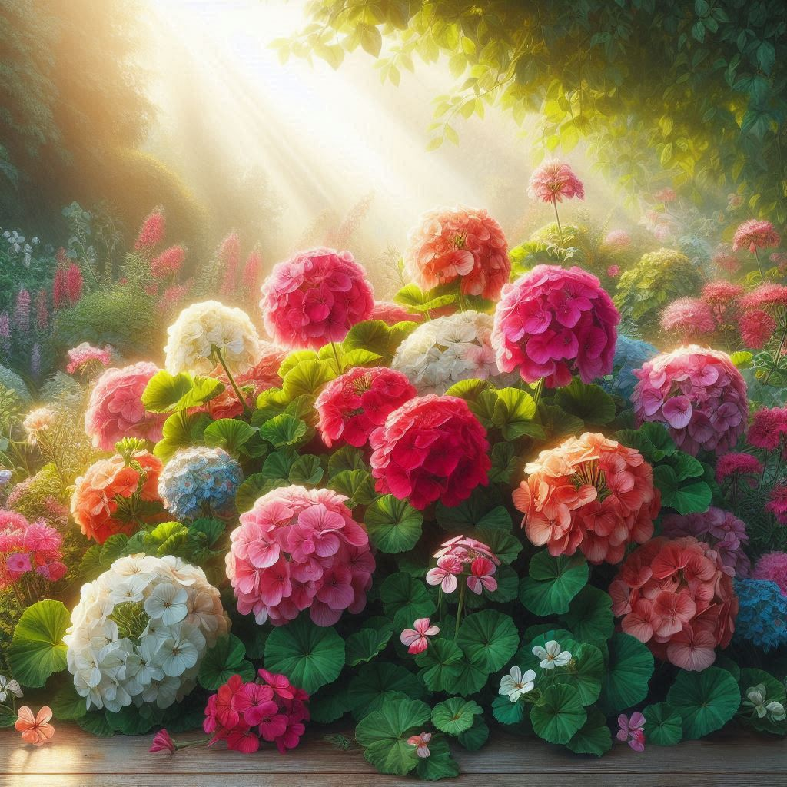
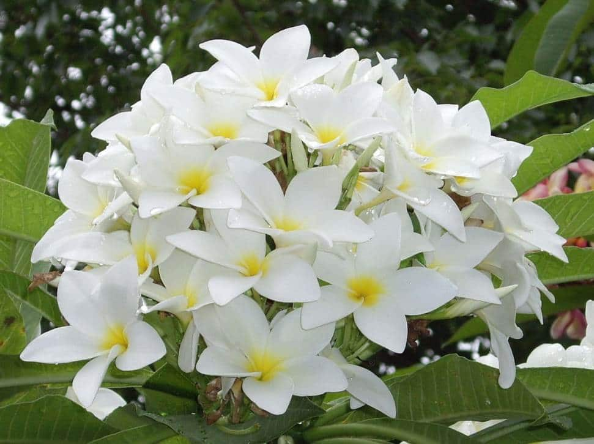
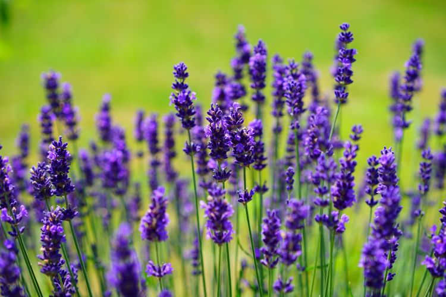
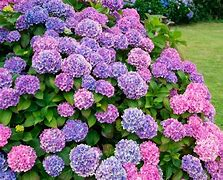
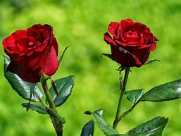
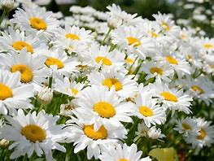

Geranios
El geranio es una planta de exterior muy apreciada por su resistencia y su vibrante floración. Pertenece al género Geranium y cuenta con más de 400 especies, aunque muchas veces se confunde con el Pelargonium, que también es popular en jardinería. Sus flores, disponibles en una amplia gama de colores como rojo, rosa, blanco y morado, aportan un toque alegre y decorativo a jardines, balcones y terrazas. Además, el geranio es fácil de cuidar, ya que tolera bien la exposición al sol y requiere riegos moderados. Su aroma característico no solo es agradable, sino que también actúa como repelente natural de insectos, lo que lo convierte en una opción ideal para exteriores.
Jazmines
El jazmín (Jasminum spp.) es una planta trepadora o arbustiva conocida por su exquisito aroma y su elegante floración. Existen más de 200 especies de jazmín, con flores que pueden ser blancas, amarillas o rojizas, dependiendo de la variedad. Su fragancia se intensifica durante la noche, lo que lo convierte en una planta ideal para jardines y terrazas. Además de su valor ornamental, el jazmín se utiliza en aromaterapia, perfumería y hasta en la elaboración de té, gracias a sus propiedades relajantes y antidepresivas. Prefiere suelos bien drenados y abundante luz natural, aunque algunas especies pueden tolerar sombra parcial.
Lavanda
La lavanda (Lavandula spp.) es una planta aromática muy apreciada por su fragancia relajante y sus múltiples usos. Sus flores de color violeta o azul crecen en espigas y desprenden un aroma característico que se utiliza en perfumería, cosmética y aromaterapia. Además de su valor ornamental, la lavanda tiene propiedades antisépticas y relajantes, siendo ideal para aliviar el estrés y mejorar la calidad del sueño. Se adapta bien a climas secos y soleados, prefiriendo suelos bien drenados para un crecimiento óptimo
Hortensias
Las hortensias (Hydrangea spp.) son arbustos ornamentales muy apreciados por sus grandes y vistosas flores, que pueden ser de color azul, rosa, blanco o morado, dependiendo del pH del suelo. Son originarias de Asia y América, y su floración se extiende desde la primavera hasta finales del verano. Estas plantas requieren un suelo bien drenado, rico en materia orgánica y con un pH adecuado para mantener su coloración vibrante. Además, necesitan buena iluminación, pero sin exposición directa al sol durante muchas horas. Son ideales para jardines y terrazas, aportando un toque elegante y colorido a cualquier espacio.
Rosas
Las rosas (Rosa spp.) son flores icónicas y apreciadas en todo el mundo por su belleza y fragancia. Pertenecen a la familia de las Rosáceas y existen más de 100 especies, además de miles de híbridos cultivados. Sus colores varían desde el clásico rojo hasta tonos blancos, rosados, amarillos y naranjas, cada uno con un significado especial en el lenguaje de las flores. Además de su valor ornamental, las rosas se utilizan en perfumería, cosmética y hasta en gastronomía. Son plantas resistentes que pueden crecer como arbustos, trepadoras o incluso en macetas, adaptándose a distintos climas y condiciones.
Margaritas
Las margaritas (Bellis perennis) son flores encantadoras y versátiles, conocidas por su sencillez y belleza natural. Su característico centro amarillo rodeado de pétalos blancos (o en otros colores según la variedad) las convierte en un símbolo de pureza, alegría y renovación. Son resistentes y fáciles de cuidar, adaptándose bien a jardines, macetas y espacios exteriores. Además, florecen en primavera y verano, aportando un toque vibrante a cualquier entorno